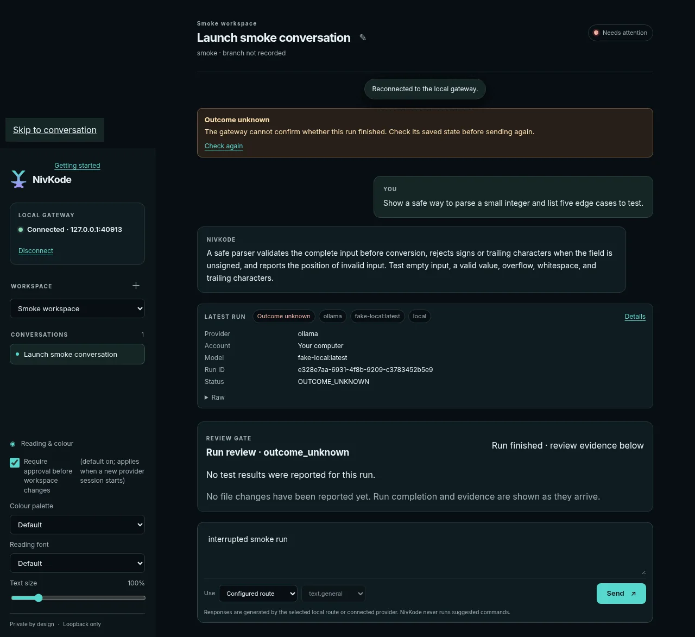
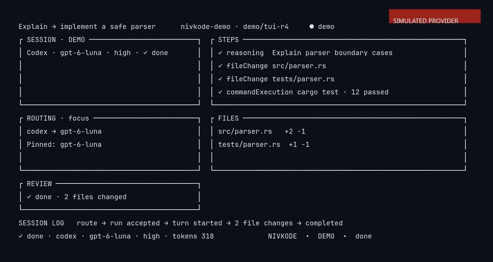

NivKode 0.2.0-beta.4
We are building a Linux app for working with local models and external AI providers. A local model can answer questions, read workspace files, and propose file changes and supported commands. You review and approve each change.
[OWNER: launch note wording]
Choose a local model or an external AI provider
Local model. We have tested the local model flow end to end on earlier builds. Live use on beta.4: Not yet tested.
External AI provider (e.g. Codex, Claude, Grok). Codex — Tested on earlier builds (experimental); live use on beta.4: Not yet tested. Claude — Not yet tested. Grok is not supported.
Review proposed changes before they happen.

How it works.
- Local model. We can answer questions and read workspace files. We can propose file edits and supported project test and build commands. Changes are shown for review; commands run only after approval.
- Command-line approvals. Run
nivkode approve <conversation> <request>to accept one pending local request by its ID. This command accepts only; it does not prompt or decline requests. - Local only. The gateway refuses requests to external AI providers and external second opinions while the switch is on. Turning it on stops active external-provider runs. The receipt records that Local only was turned on.
External AI providers: Codex — Tested on earlier builds (experimental); live use on beta.4: Not yet tested. Claude — Not yet tested. Grok is not supported.
Earlier candidate previews
These images are from earlier candidates. They are interface previews, not beta.4 results.



Provider testing
- Ollama — local model provider: Tested on earlier builds; live use on beta.4: Not yet tested.
- Codex: Tested on earlier builds (experimental); live use on beta.4: Not yet tested.
- Claude: Not yet tested. Grok is not supported.
[OWNER: launch date wording]
[OWNER: launch date wording]
[OWNER: price wording]